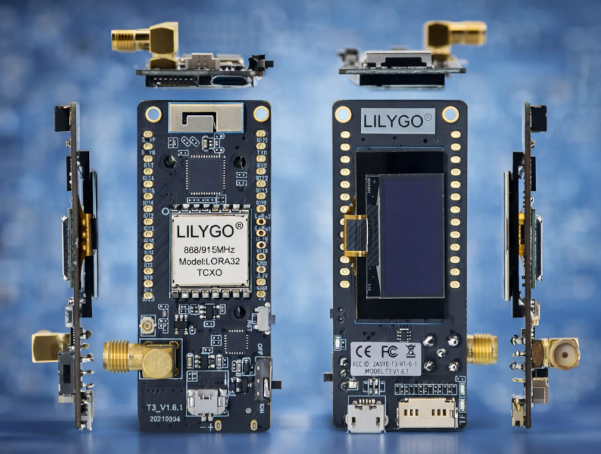
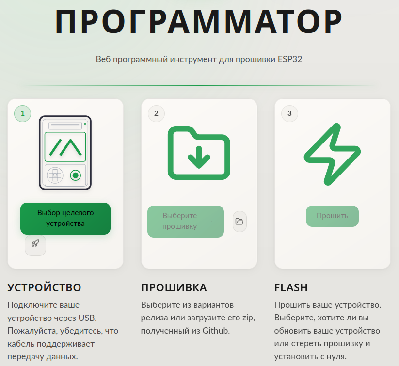

LILYGO LoRa32 версии T3_V1.6.1 объединяет возможности ESP32 и радиомодуль LoRa на плате размером 64.47 на 27.13 миллиметров. Компактность обманчива: внутри скрывается двухъядерный процессор, три беспроводных интерфейса, OLED-дисплей и слот для карты памяти. Энтузиасты используют эти платы для создания метеостанций, систем мониторинга, даже для приема сигналов со спутников. Звучит как фантастика? На деле это решение стоимостью около двух тысяч рублей на 2021 год.

Архитектура и аппаратная начинка
Сердце платы построено на чипе ESP32 с двухъядерным 32-битным микропроцессором Xtensa LX6. Встроенная флеш-память объемом 4 МБ хранит прошивку и данные пользователя. Основная тактовая частота достигает 240 МГц, чего хватает для одновременной обработки данных от сенсоров, управления беспроводными интерфейсами и вывода информации на дисплей. Микросхема поддерживает Wi-Fi стандарта 802.11 b/g/n и Bluetooth версии 4.2 с поддержкой режима низкого энергопотребления BLE.
Радиочастотная часть базируется на трансиверах SX1276 или SX1278 от Semtech. Эти чипы определяют рабочий диапазон платы. SX1278 работает на частоте 433 МГц, а SX1276 покрывает диапазоны 868 МГц, 915 МГц и 923 МГц. Выбор конкретного варианта зависит от региона применения и местных требований к использованию радиочастотного спектра. Модуль обеспечивает дальнодействующую передачу данных с малым энергопотреблением и безопасную передачу.
Технология LoRa использует расширенный спектр сигнала, что позволяет извлекать данные даже когда мощность сигнала опускается значительно ниже уровня шумов. Ток приема составляет всего 9.9 мА, что делает платформу экономичной для автономных применений. Антенна с разъемом SMA идет в комплекте, хотя многие пользователи заменяют её на более производительные модели для увеличения дальности связи.
Дисплей и система индикации
Плата комплектуется OLED-дисплеем диагональю 0.96 дюйма на базе контроллера SSD1306. Разрешение 128 на 64 пикселя позволяет выводить текстовую информацию, простую графику, пиктограммы. Технология органических светодиодов не требует подсветки, каждый пиксель светится самостоятельно. Это даёт глубокий черный цвет и отличную контрастность даже при ярком солнечном свете.
Дисплей подключается через интерфейс I2C, используя выводы GPIO21 для линии данных SDA и GPIO22 для тактового сигнала SCL. Библиотеки для работы с SSD1306 доступны как для Arduino IDE, так и для MicroPython. Простота программирования позволяет создавать информативные интерфейсы даже начинающим разработчикам.
Потребление энергии дисплеем минимально: активные пиксели потребляют ток, неактивные остаются выключенными. Такой подход критичен для автономных устройств на батарейках. Разработчики часто реализуют режимы экономии, когда дисплей гаснет после периода бездействия, сохраняя заряд аккумулятора на длительное время работы.
Питание и энергопотребление
Плата поддерживает питание от USB-порта или литий-полимерного аккумулятора напряжением 3.7 В через разъем JST 2-pin 1.25 мм. Встроенная схема управления питанием автоматически переключается между источниками, обеспечивая зарядку аккумулятора при подключении USB. В комплекте поставляется соединительный кабель для подключения батареи.
Платформа оснащена переключателем питания от аккумулятора, что позволяет физически отключать батарею без отсоединения разъема. Кнопка на плате выполняют функции загрузки (Boot) и сброса (Reset), упрощая процесс программирования и отладки. Пользователи отмечают автономность около 6 часов при использовании батареи емкостью 1200 мАч в режиме активной работы с включенным дисплеем.
Грамотная оптимизация прошивки способна значительно растянуть время работы. Выключение дисплея между измерениями, снижение частоты передачи, использование режимов сна процессора - эти приемы кратно увеличивают время автономной работы. Низкий ток приема радиомодуля в 9.9 мА делает устройства на базе LoRa32 эффективными для задач мониторинга и длительного наблюдения.
Прошивка Meshtastic и децентрализованная связь
LILYGO LoRa32 версии T3_V1.6.1 стала одной из самых популярных платформ для прошивки Meshtastic. Эта открытая прошивка превращает обычную плату в узел децентрализованной mesh-сети, работающей без интернета, сотовой связи и любой инфраструктуры. Устройства общаются напрямую друг с другом, автоматически пересылая сообщения через промежуточные узлы.
Пользователи в отзывах подтверждают успешную работу с Meshtastic. Один из разработчиков отмечает: прошил модуль, настроил, всё работает отлично. Аккумулятор на 1200 мАч обеспечивает примерно 6 часов автономной работы. Связь между двумя модулями устанавливается без проблем, приложение на телефоне подключается по Bluetooth.
Установка Meshtastic занимает буквально несколько минут. После прошивки плата сразу готова к работе. На дисплее отображается информация о подключенных узлах, входящих сообщениях, уровне заряда батареи. Управление настройками происходит через мобильное приложение для Android или iOS по Bluetooth.
Страница flasher.meshtastic.org выглядит так:

Для работы данной страницы требуется поддержка браузером протокола WebSerial API. Его может не быть в Firefox, но он должен быть в Chrome.
Mesh-сеть растет органически: каждый новый узел расширяет покрытие. Пользователи общаются в текстовых чатах, передают координаты, делятся телеметрией датчиков. Meshtastic поддерживает шифрование сообщений, создание приватных каналов, настройку мощности передатчика. Можно объединить несколько устройств в группу для семейных походов, использовать плату как персональный трекер, организовать систему оповещения для района. Главное преимущество - полная автономность от провайдеров и операторов связи.
Прошивки и применение платы
Плата поддерживает программирование через Arduino IDE и MicroPython. Сообщество разработало множество готовых прошивок под конкретные задачи. TinyGS использует плату как наземную станцию для приема телеметрии с малых спутников. Несколько пользователей в отзывах подтверждают успешную работу: модуль прошит под проект TinyGS, работает четко, принимает спутники на низкой орбите.
Радиолюбители применяют LoRa32 для APRS-шлюзов и цифровых ретрансляторов. Плата работает как Digipeater, передавая пакеты между станциями и расширяя покрытие сети. Один из пользователей поделился опытом: плата работает отлично в режиме Digipeater, можно проверить её работу, отслеживая сигналы. Другие применяют модуль для APRS LoRa IGate на частоте 433.775 МГц или для отслеживания погодных зондов.
Прошивка ExpressLRS превращает плату в приемник для радиоуправляемых моделей, обеспечивая дальнюю и надежную связь. Готовые примеры кода доступны в репозиториях ESP32-Paxcounter и LoRa32 на GitHub, что упрощает старт разработки собственных проектов.
Расширенные возможности и периферия
На плате распаяны выводы для всех доступных GPIO процессора ESP32. Это открывает простор для подключения сенсоров, исполнительных устройств, дополнительных модулей. Аналогово-цифровые преобразователи на выводах ADC0-ADC7 (пины GPIO36, GPIO39, GPIO34, GPIO35, GPIO14, GPIO12, GPIO13, GPIO15) читают аналоговые сигналы. Ёмкостные сенсоры на выводах TOUCH0-TOUCH6 (пины GPIO4, GPIO2, GPIO0, GPIO15, GPIO13, GPIO12, GPIO14) реагируют на прикосновения без механических кнопок.
Слот для карты памяти microSD расширяет возможности хранения данных. Пины CS, MOSI, SCK и MISO (IO13, IO15, IO14, IO02) обеспечивают подключение по интерфейсу SPI. Логирование показаний датчиков, сохранение принятых сообщений, запись параметров работы системы - всё это записывается на карту памяти.
Последовательные интерфейсы UART на выводах TXD (GPIO1) и RXD (GPIO3) позволяют подключать GPS-модули, модемы, промышленные датчики с цифровым выходом. Интерфейс I2C на пинах SDA (GPIO21) и SCL (GPIO22) объединяет несколько устройств на одной шине: датчики температуры, влажности, давления, акселерометры. На плате также выведены пины для работы с LoRa-модулем: LoRa1, LoRa2, пины 26 для GPIO26, контакты для DAC1 и LoRa_DIO.
Питание периферии осуществляется через выводы 3.3V и 5V с соответствующими контактами заземления GND. Встроенный светодиод на пине GPIO25 удобен для отладки и индикации состояний. В комплекте поставляются штыревые разъемы для пайки, что позволяет устанавливать плату на макетную доску или создавать собственные корпуса.
Сообщество и практический опыт
Популярность платы создала активное сообщество разработчиков. Пользователи делятся опытом настройки, оптимизации дальности связи, решения типичных проблем. Один из энтузиастов протестировал пару модулей на 433 МГц и обнаружил интересную особенность: рабочий диапазон начинается с 361 МГц, а не с 430 МГц как указано в документации.
Качество исполнения платы получает высокие оценки. Модули приходят в специальном пластиковом кейсе с поролоновой подкладкой, что защищает компоненты при транспортировке. В комплекте присутствуют разъемы для пайки пинов, кабель для подключения автономного питания с JST-разъемом. На плате установлена стандартная прошивка, которую легко заменить на специализированную.
Единственный момент, на который указывают некоторые пользователи: контактные площадки для пайки пинов иногда имеют покрытие, к которому припой не сразу пристает. Приходится потратить чуть больше времени на качественную пайку, но результат того стоит. Другие отмечают, что разъем SMA для антенны может мешать установке платы на макетную доску - этот нюанс стоит учитывать при проектировании корпуса.
Качество комплектной антенны вызывает разные мнения. Часть пользователей меняет штатную антенну на более качественную для увеличения дальности связи. Один из покупателей отмечает, что антенна из комплекта имеет резонанс на 440 МГц для версии 433 МГц. Другой указывает, что антенна не резонирует точно на частоте 433 МГц, поэтому длительное использование штатной антенны не рекомендуется. Эксперименты с антеннами дают прирост производительности.
Важная деталь для программирования: кабель USB должен поддерживать передачу данных, а не только зарядку. Один из пользователей столкнулся с тем, что десяток кабелей оказались только для зарядки, пришлось заказывать новый с поддержкой данных. Разработчики рекомендуют использовать качественные кабели с маркировкой data transfer.